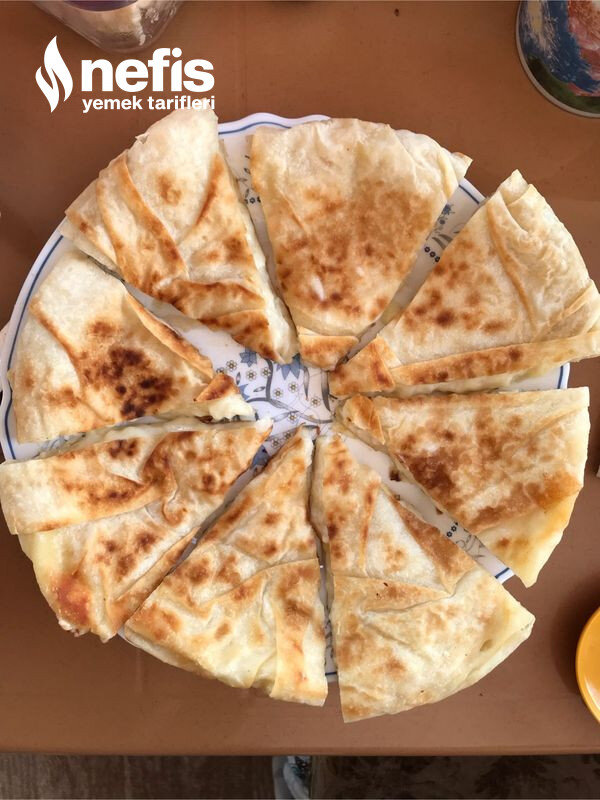
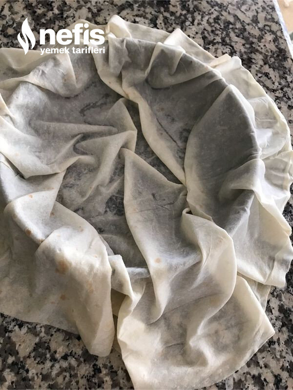
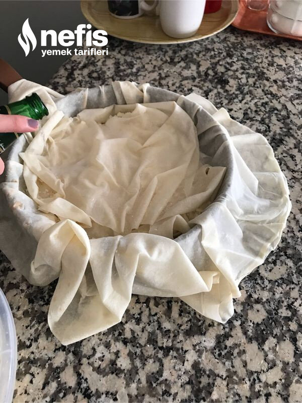
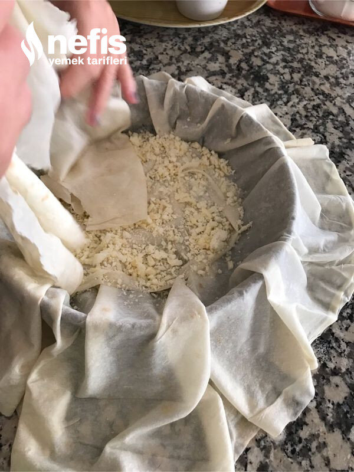
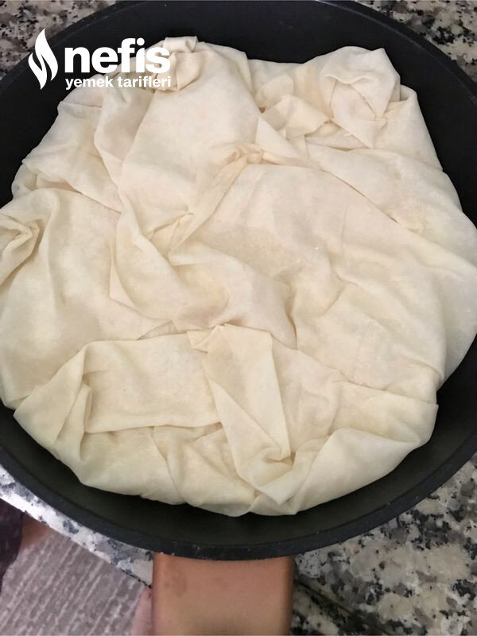
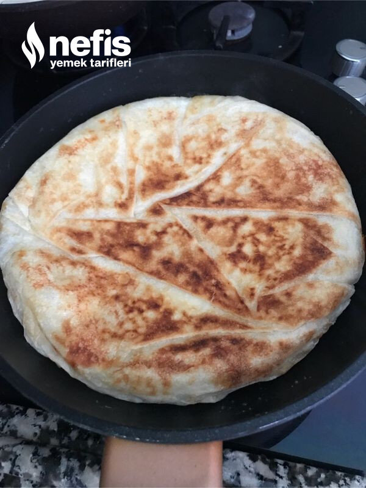

Nefis Tava Böreği
2023-01-10
← Tüm tarifler

🍽️ 2-4 kişilik
⏱️ Hazırlık: 15 dk
🔥 Pişirme: 20 dk
🏷️ Hamur İşi Tarifleri
🏷️ Börek Tarifleri
Malzemeler
2 adet böreklik yufka
Yarım şişe maden suyu
1 kase peynir
İstenirse,karabiber,pulbiber
1 yemek kaşıığı tereyağı
Hazırlanışı
Tavayı ocağa alıp ısıtıyoruz.
Biraz tereyağı sürüyoruz.
Tavayı tezgaha alıp bir yufkayı seriyoruz.
Diğer yufkayı dörde bölüyoruz.
Tavaya yufkanın dörtte birini daha koyuyoruz.
Üzerine biraz maden suyu gezdiriyoruz.
Peynir serpeliyoruz.
Diğer dörtte bir yufkalara da maden suyu ve peynir işlemini tekrarlıyoruz.
Tavadan sarkan yufkaları üzerine kapatıyoruz.
Üzerine birkaç parça tereyağı koyuyoruz.
Tavayı ocağa alıp alt kısmını pişiriyoruz.
Spatula yardımıyla diğer tarafına çevirip pişiriyoruz.Nefis böreğimiz hazır.Afiyet olsun 😊.
Fotoğraflar




